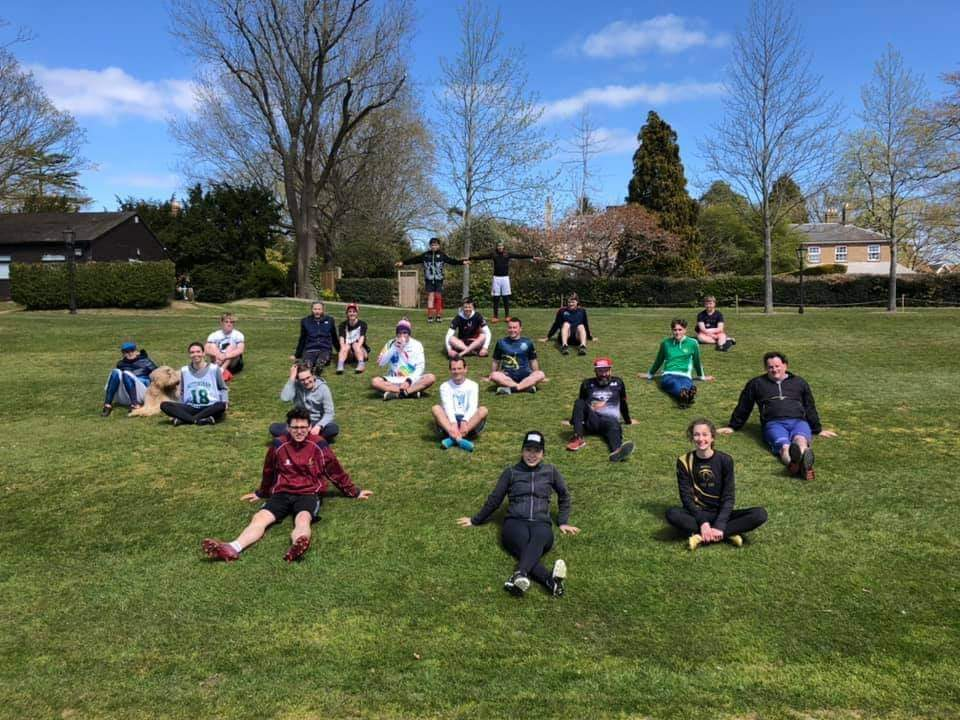

About Tonbridge Ultimate

Tonbridge Ultimate was formed in 2020. West Kent up to that point did not have a team. We now attract players from throughout Kent and West Sussex.
Most of our players live in or around Tonbridge, Sevenoaks and Tunbridge Wells though some travel from as far as Redhill, Maidstone, and Canterbury.
We have teams that compete in the following divisions:
Under 14s – for players up to and including year 8
Our closest U14 competition is with teams based in Wandsworth, Brighton and Epsom. We enjoy close working relationships with the coaches of these teams
and we arrange regular friendly fixtures. In addition to local friendlies we have the opportunity to compete in the u14 National Indoor Championships
that are typically held in March, and National Outdoor Championships held in July.
- Details of the 2025 U14 Indoor Championships in Wolverhampton
- Details of the 2025 U14 Outdoor Championships in Leicester
Under 17s - for players in years 9-11
Our closest local competition is based in Guildford, Aylesford and Windsor. We enjoy close working relationships with the coaches of these teams and
we arrange regular friendly fixtures. In addition to local friendlies we have the opportunity to compete in the u17 National Championships that are
held alongside the U14 championships that are typically held in March, and National Outdoor Championships held in July.
- Details of the 2025 U14 Indoor Championships in Wolverhampton
- Details of the 2025 U14 Outdoor Championships in Leicester
Under 20 – for players in years 12 and 13
Most of our juniors are u14 and u17 so we do not expect to field teams in U20 competition until 2026/7.
Open
Our player base is currently too small to compete in Open Competition.
Grand Masters – for players over the age of 40
Great Grand Masters – for players over the age of 48
Our adult player base is older than many clubs. Several of our older players are still playing competitively in European and World age group championships.
In 2025 we plan to enter UK Masters Championships indoors and outdoors.